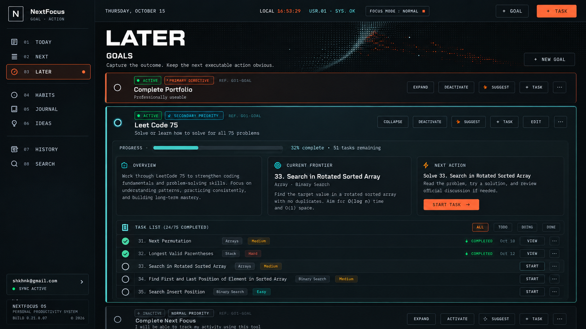

01 / OVERLOAD
Endless backlogs
Every thought becomes another obligation. Your list grows faster than your progress.
Your ambitions deserve more than an endless task list. Turn big goals into small actions, prepare what matters, and focus on one meaningful task today.
Implement the responsive layout and polish the first impression.
MAIN FOCUS
PER DAY
MAX TASKS
IN NEXT QUEUE
OPTIONAL
QUICK TASKS
Most task managers help you collect work. NextFocus helps you decide what actually deserves your attention.
Every thought becomes another obligation. Your list grows faster than your progress.
So many possible tasks that simply choosing what to do feels like work.
You check off small tasks while the goals that matter remain untouched.
Each step has a purpose. Capture freely, plan intentionally, and execute without distractions.
Save raw thoughts without adding more commitments. Ideas stay separate from your actual tasks until you decide they're worth pursuing.
Capture the thought. Decide what it means later.
A home for every type of thought and a clear boundary between planning, execution, and reflection.
Define outcomes and connect every next action to something meaningful.
Use Gemini suggestions to turn big outcomes into concrete, verb-first steps.
Keep only seven prepared tasks ready to execute. Prioritize instead of stockpiling.
Choose the most important task today, with room for up to three small extras.
Build routines with flexible schedules and minimum versions, separate from your backlog.
Reflect on your day in the dashboard and check in quickly from your browser toolbar.
NextFocus is opinionated by design. Its limits help you choose deliberately.
One clear priority to protect your attention.
A small queue that is realistic, not overwhelming.
Handle minor work without losing the main objective.
The full dashboard gives you room to plan big outcomes and break them down. The Chrome popup keeps daily execution within reach.

Start using NextFocus locally without needing an account. Optional Firebase cloud sync supports access across devices.
QUESTIONS? READ THE FAQ ↓Use the app locally, even when you're disconnected.
Get into your work without a sign-up step.
Choose Firebase sync when you want multi-device backup.
No. Instead of providing an unlimited list of tasks, NextFocus separates goals, prepared work, daily focus, habits, and reflection. Its limits encourage deliberate prioritization.
No. Local use works without sign-up. Cloud syncing is optional.
NextFocus can use Gemini to suggest actionable steps for a larger goal. You review the suggestions and decide which tasks to keep.
The product includes both a full dashboard and a browser popup. The dashboard is designed for deeper planning and the popup for quick actions. Availability depends on how the app is distributed.
Because a single clear priority makes it easier to start and easier to recognize progress. You can still include up to three optional quick tasks.
One meaningful task. One clear direction. Make progress on the goals you've been putting off.